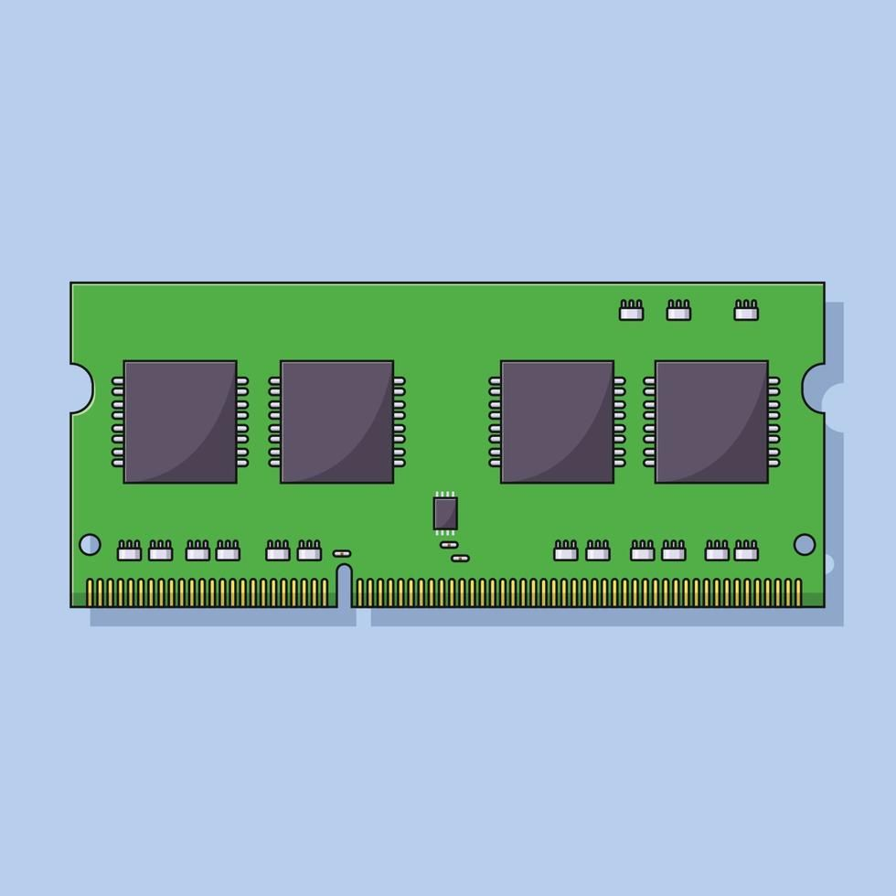

La memoria principal, también conocida como memoria RAM (Random Access Memory), es un componente fundamental en los sistemas informáticos, encargado de almacenar temporalmente los datos y programas que el procesador necesita ejecutar en tiempo real. A diferencia del almacenamiento permanente, como los discos duros o las unidades SSD, la memoria principal es volátil, lo que significa que su contenido se borra al apagar el dispositivo. Esta memoria permite el acceso rápido a la información, facilitando una mayor velocidad de procesamiento y optimizando el rendimiento general del sistema. Gracias a la memoria principal, el sistema operativo y las aplicaciones pueden funcionar de manera ágil, gestionando eficientemente el acceso a los datos mientras están en uso.
Memoria Principal

Memoria Secundaria
Descripción de la sección 2. Esta sección cubre el tema ABC...
Dispositivos E/S
Descripción de la sección 3. Esta sección cubre el tema DEF...
Dispositivos RISC de última tecnología
Descripción de la sección 4. Esta sección cubre el tema GHI...
Comparación Generaciones RISC y CISC
Descripción de la sección 4. Esta sección cubre el tema GHI...
GPU - Procesamiento de video 4K óptimo y con la mitad de presupuesto
Descripción de la sección 4. Esta sección cubre el tema GHI...
GPU - Características decisorias para selección de GPU's
Descripción de la sección 4. Esta sección cubre el tema GHI...
GPU - Impacto de las nuevas tecnologías
Descripción de la sección 4. Esta sección cubre el tema GHI...
GPU - Preguta Evaluación 1
Descripción de la sección 4. Esta sección cubre el tema GHI...
GPU - Preguta Evaluación 2
Descripción de la sección 4. Esta sección cubre el tema GHI...
GPU - Preguta Evaluación 3
Descripción de la sección 4. Esta sección cubre el tema GHI...
GPU - Unidades Flip Flop
Descripción de la sección 4. Esta sección cubre el tema GHI...
Operaciones Básicas
Descripción de la sección 4. Esta sección cubre el tema GHI...